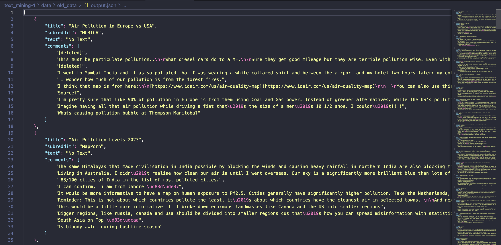
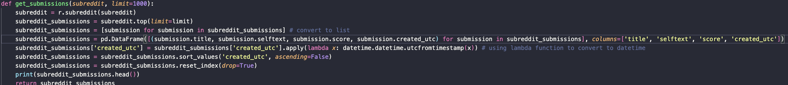
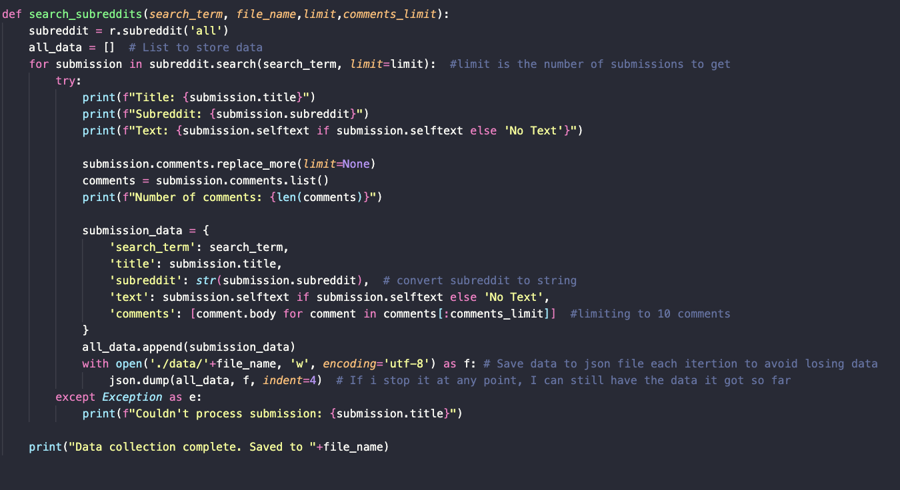
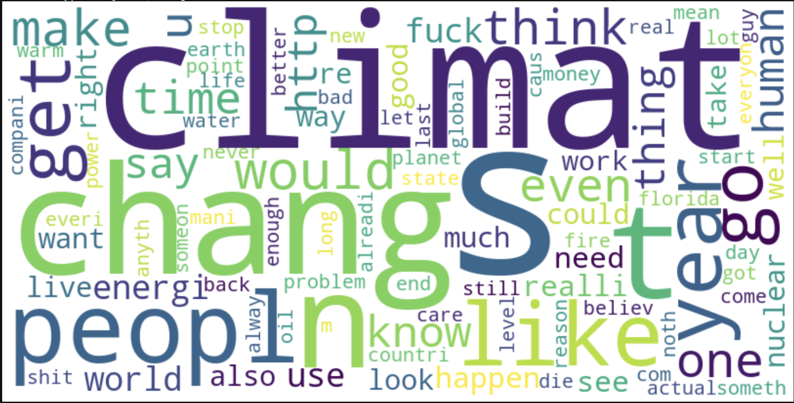
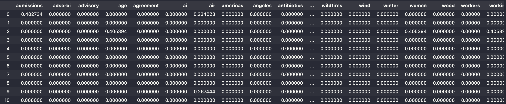
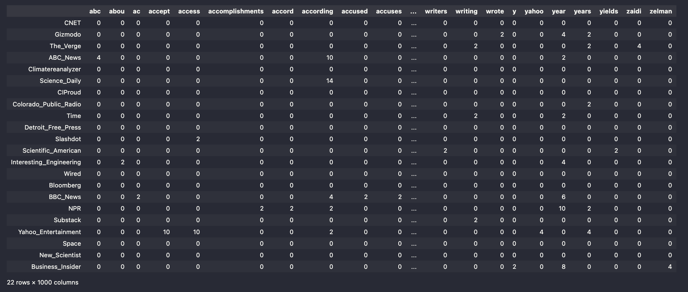
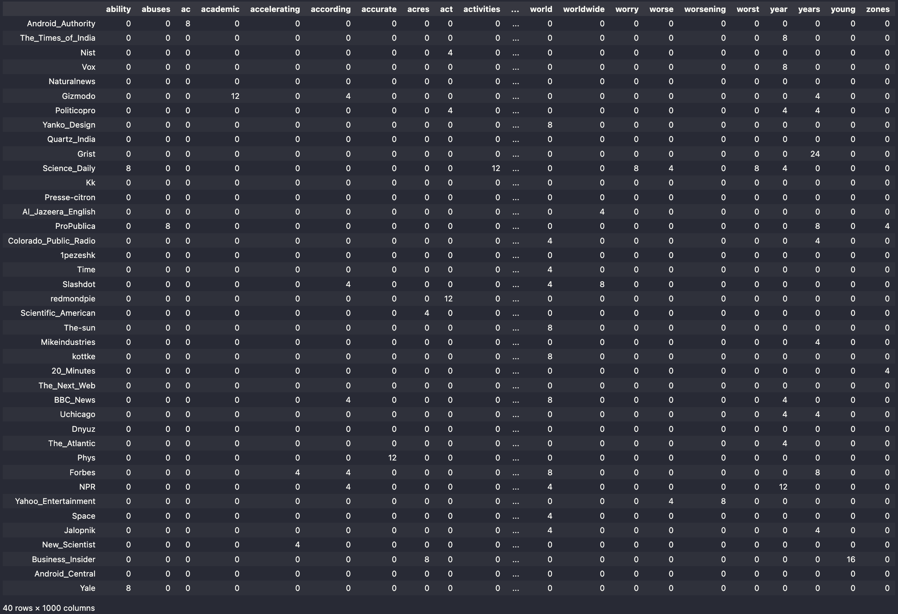
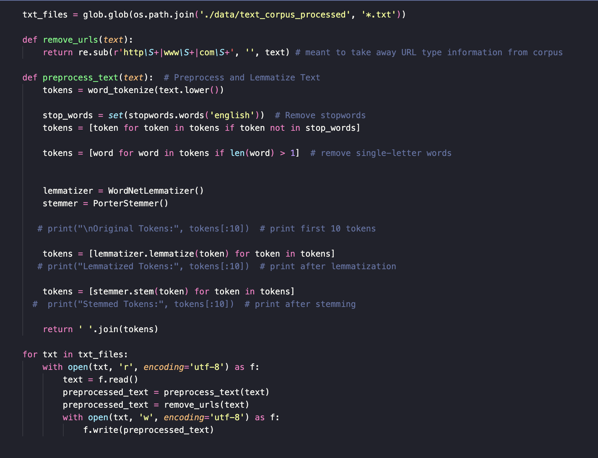

Is climate change a threat to our future?
Data
Module 1
To gather data, I used 'three' sort of sources. The reddit api wrapper, or PRAW, to scrape data from reddit, NEWSAPI to scrape data from news sources, and BeautifulSoup for detailed article content extraction.
News API Data Collection
The News API provided a structured way to gather climate-related news articles. Here's how I approached it:
- Used endpoints like
https://newsapi.org/v2/everything?q=bitcoinwith appropriate API keys - Collected raw JSON data including article metadata, URLs, and preview content
- Implemented BeautifulSoup to extract full article content from the provided URLs
Data Processing Pipeline
The data collection and processing pipeline involved several sophisticated steps to ensure data quality and usability:
1. Initial Data Collection
The raw data from multiple sources required different handling approaches:
NewsAPI Call:
topic = 'air pollution'
URLPost = {
'apiKey':n_creds['api_key'],
'source': 'bbc-news',
'pageSize': 100,
'totalRequests': 100,
'q':'air pollution'}
req = requests.get('https://newsapi.org/v2/everything', params=URLPost)
After this, I get a JSON sructure dataset with the following format:
Before Processing:
Raw JSON data included mixed content types, null values, and nested structures like:
{
"status": "ok",
"totalResults": 14185,
"articles": [
{
"source": {
"id": null,
"name": "Yahoo Entertainment"
},
"author": "Anna Washenko",
"title": "Climate change increased the odds of Los Angeles' devastating fires...",
"description": "As Los Angeles reels from the loss of lives and homes to the...",
"url": "https://consent.yahoo.com/v2/...d7326db44fc0",
"urlToImage": null,
"publishedAt": "2025-01-29T21:16:52Z",
"content": "If you click 'Accept all', we and our partners, ...[+703 chars]"
},
After Processing:
Cleaned and vectorized data with standardized format:
ability abuses ac academic accelerating according \
Android_Authority 0 0 8 0 0 0
The_Times_of_India 0 0 0 0 0 0
Nist 0 0 0 0 0 0
Vox 0 0 0 0 0 0
Naturalnews 0 0 0 0 0 0
This is a snippet of the same corpus from the JSON data above. The processing pipeline follows these steps:
If you want to view all the data and code for the project -> Check out my github: Module 1 Data
- Data Collection: JSON format data gathered from news sources
- Text Extraction: Programmatically converted into a corpus of .txt files, organized by news source
- Preprocessing:
- Removal of HTML tags and special characters
- Tokenization of text into individual words
- Removal of stop words and rare terms
- Lemmatization to reduce words to their base form
- Vectorization: Implementation of both Count Vectorizer and TF-IDF Vectorizer to create sparse matrices
The TF-IDF (Term Frequency-Inverse Document Frequency) vectorizer was particularly crucial as it:
- Normalizes word frequencies across documents
- Assigns higher weights to terms that are unique to specific documents
- Reduces the impact of common words that appear across many documents
- Creates a more nuanced representation of document importance
Reddit Data Collection
For Reddit data collection, I utilized PRAW (Python Reddit API Wrapper). An example of the data structure is as follows:
When using PRAW I created a seperate python file to contain a majority of my python reddit helper functions. That is what is called, pythonHelperFunctions.py in this case. This file was imported into my main python file. There were two majors functions I wrote to gather data from reddit, one to get comments from a specific subreddit, useful for gathering labeled data soley from a specific subreddit. The other fucntion was useful to search through all the subreddits based on specicif search term - this is what I used for the majority later on in the project.
and
It was important to account for no text because in cases of empty returns it would break my code when I was trying to dump no data into a json.
The JSON data structures from both News API and Reddit were semi-structured, presenting unique challenges in data cleaning and standardization. Each source required specific handling:
- News API data needed URL validation and content extraction
- Reddit data required handling of deleted comments and varying content lengths
- Both sources needed consistent date formatting and text normalization
Data Quality Assurance and Challenges
To ensure data quality and replicability, I implemented several validation steps and addressed various challenges:
Data Validation Steps:
- Automated error handling for API rate limits and connection issues
- Data completeness checks before JSON storage
- Consistent text encoding and special character handling
- Detailed logging of data collection and processing steps
- Validation of data for integrity and consistency
- Filtering of non-Latin alphabet characters
Technical Challenges Addressed:
- API Rate Limiting: Implemented exponential backoff strategy for API requests
- ...[int+] Characters Remaining | Much of the API didn't return the stories of the query
- Data Consistency:Developed robust error handling for missing or malformed data
- Text Encoding: Standardized UTF-8 encoding across all sources
- Memory Management: Implemented batch processing for large datasets
Data Visualization and Analysis:
To better understand the collected data:
- Word Clouds: Visual representation of term frequency across sources 
- Dataframes: Data exploration and analysis
Web Scraped TFIDF:
After I gathered URLs from the NEWSAPI I Programmatically scraped content from the sites - then I made a TFIDF sparse matrix out of that newly created corpus.
NewsAPI Data Deliverable
I did two queries with the News api to get the data that I collected. This then turned into two seperate dataframes that were vecotrized. One datafram is of vectorized data from the query "air pollution" and the other the term "climate change".
Climate Change Data
Air Pollution Data
Key Data Processing Function
This function would be plugged right into the vecotorizer objects to systemattically clean and process the data!
This was implemented into the vectorizer objects from scikit learn to process the data before it vectorized the words. I needed stemming and lemmitization to occur and found it conveinvent that we can implement it right into the object.
Next Steps
With the data collection and processing pipeline in place, stay tuned for the next steps -> topics include: Exploratory Data Analysis, Sentiment Analysis, and even experimenting with some basic ML models to contextualize this data. We've collected this data, now we have to synthesize them.